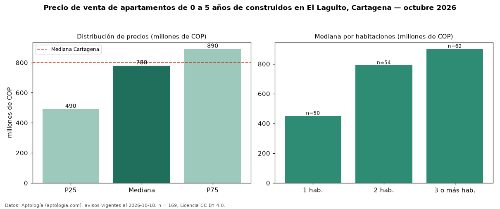

Precio de venta de apartamentos de 0 a 5 años de construidos en El Laguito, Cartagena — octubre 2026
En El Laguito, Cartagena, la mediana de precio de venta de apartamentos de 0 a 5 años de construidos es COP 780 millones, según 169 avisos vigentes. Eso es 4 % más que la mediana de todos los apartamentos en venta de El Laguito (COP 750 millones, n = 269); este segmento reúne el 63 % de esos avisos. Por metro cuadrado, la mediana es COP 8,15 millones/m² (n = 168), 5 % por debajo del conjunto de referencia (COP 8,55 millones/m²). El área mediana anunciada es 90 m². El segmento con más oferta es el de 3 o más habitaciones (62 avisos, mediana COP 900 millones); pasar de 1 habitación a 3 o más habitaciones cambia la mediana +100 %. La administración mediana declarada es COP 750.000 al mes (n = 129). La mitad central de los avisos va de COP 490 millones a COP 890 millones (razón 1,8), una dispersión moderada. El estrato más frecuente es 6 (67 % de los avisos con estrato). Datos: Aptología (aptologia.com), CC BY 4.0 — https://www.aptologia.com/venta/cartagena/el-laguito. Archivos: PDF, CSV con las cifras y gráfica PNG.

| Avisos únicos | 169 |
|---|---|
| Percentil 25 | COP 490.000.000 |
| Mediana | COP 780.000.000 |
| Percentil 75 | COP 890.000.000 |
| Mediana por m² | COP 8.146.792 |
Fuente: avisos vigentes de portales inmobiliarios recopilados por Aptología, deduplicados (mínimo 30 avisos únicos por celda). Precios pedidos, no cerrados. Fecha: 2026-10-18.